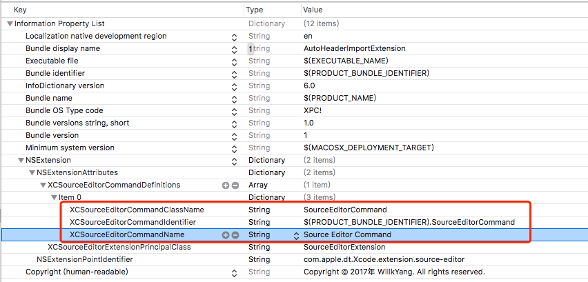
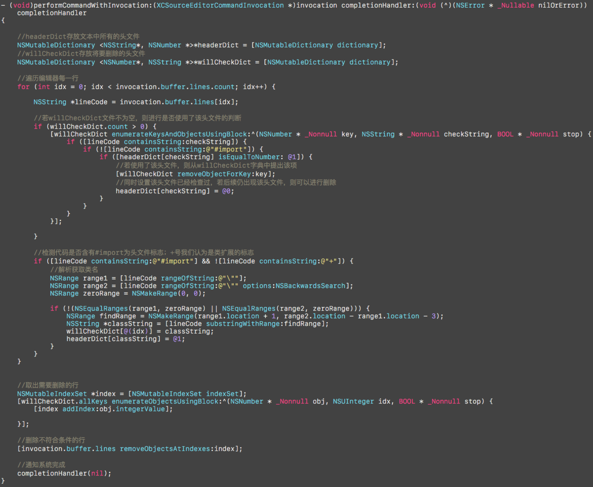
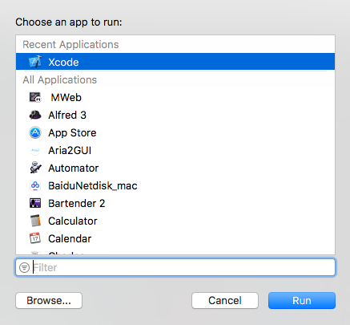
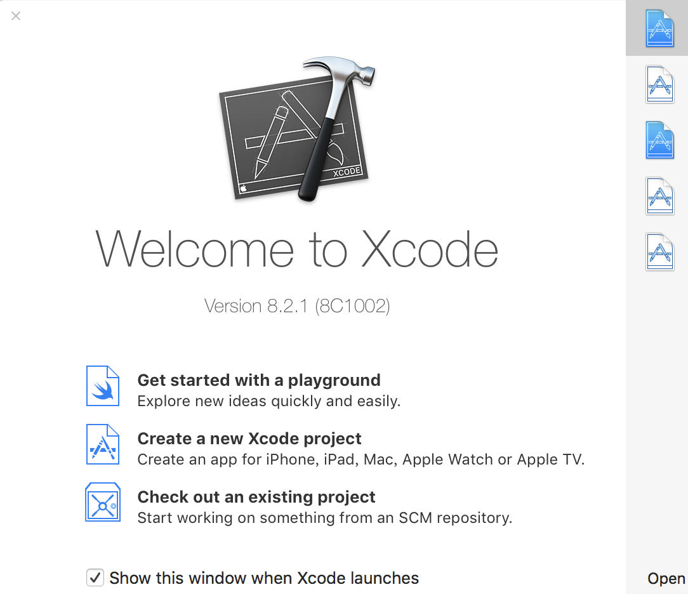
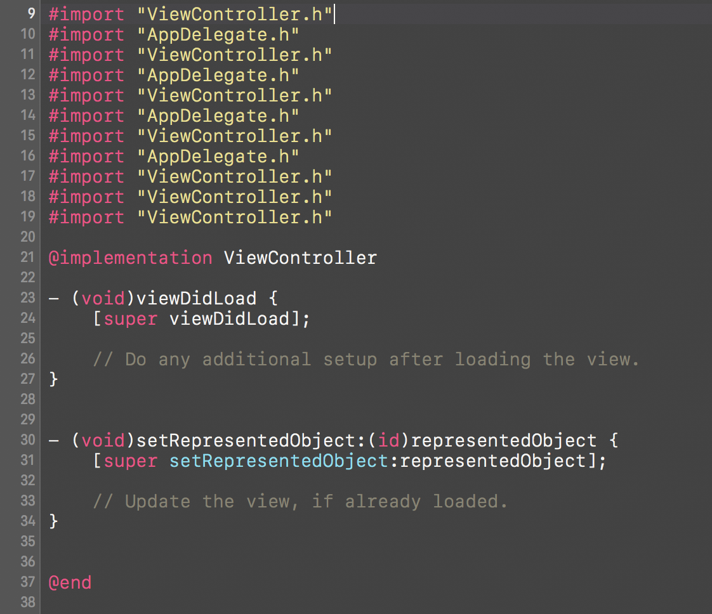
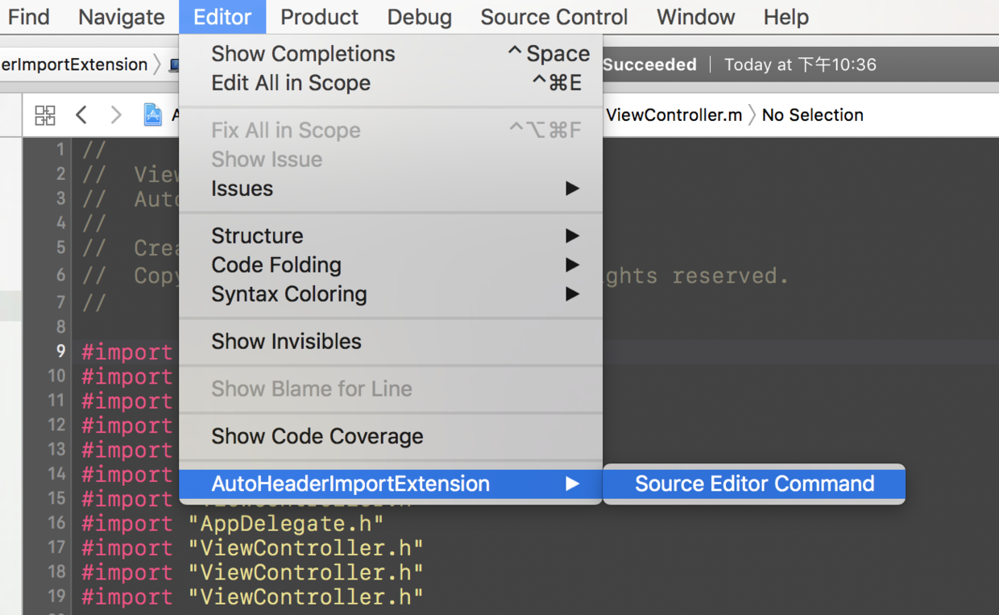
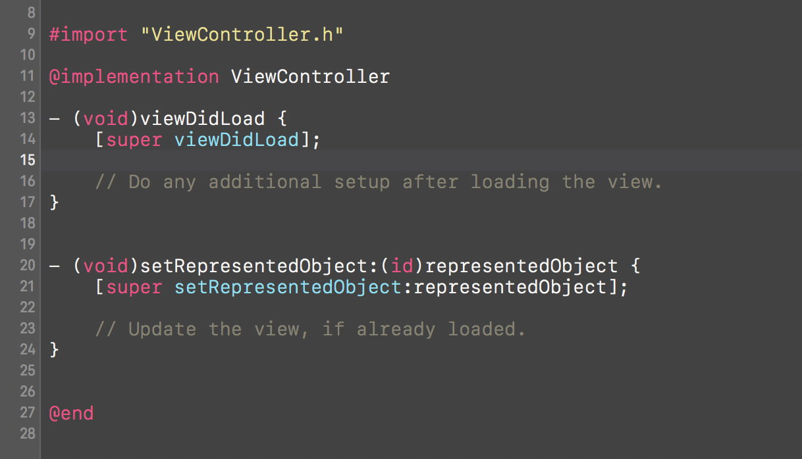

本文基于Xcode8开放的Xcode Source Editor Extension，实现了一个自动删除源码中重复头文件的小插件。
Xcode8开放了新的一个Extension：Xcode Source Editor Extension，目的是让开发者可以正规的自主为IDE编写插件，虽然说系统现提供的功能还比较拮据，但是不妨碍我们了解和使用，本文主要介绍Xcode Source Editor Extension的功能，并演示一个简单的插件的实现～
一、实现功能 1.删除无用的类头文件，要求类名和文件名一致
二、编写代码 1.新建项目，然后新建一个Target，类型选择Xcode Source Editor Extension，完成之后设置target的签名和项目的签名一致。
2.在info.plist中可以修改插件显示名称Bundle name和其它对Extension的设置。

3.系统默认为我们生成SourceEditorCommand文件，此处我们也可以在info里边修改配置项，类似于项目中系统生成的Main.storyboard。插件的重点基本在：
1 - (void)performCommandWithInvocation:(XCSourceEditorCommandInvocation *)invocation completionHandler:(void (^)(NSError * _Nullable nilOrError))completionHandler
用户调用我们的插件时，系统会回调这个方法，
######XCSourceEditorCommandInvocation
Information about the source editor command that the user invoked, such as the identifier of the command, the text buffer on which the command is to operate, and whether the command has been canceled by Xcode or the user.
其中invocation.buffer是编辑器的全部文本
1 2 3 4 /** 当前编辑器的全部文件内容 */ @property (readonly, strong) NSMutableArray <NSString *> *lines; /** 是当前选中的文本 */ @property (readonly, strong) NSMutableArray <XCSourceTextRange *> *selections;
我们在回调方法中编写如下代码：

1 2 3 4 5 6 7 8 9 10 11 12 13 14 15 16 17 18 19 20 21 22 23 24 25 26 27 28 29 30 31 32 33 34 35 36 37 38 39 40 41 42 43 44 45 46 47 48 49 50 51 52 53 54 55 56 NSMutableDictionary <NSString *, NSNumber *>*headerDict = [NSMutableDictionary dictionary];NSMutableDictionary <NSNumber *, NSString *>*willCheckDict = [NSMutableDictionary dictionary];for (int idx = 0 ; idx < invocation.buffer.lines.count; idx++) { NSString *lineCode = invocation.buffer.lines[idx]; if (willCheckDict.count > 0 ) { [willCheckDict enumerateKeysAndObjectsUsingBlock:^(NSNumber * _Nonnull key, NSString * _Nonnull checkString, BOOL * _Nonnull stop) { if ([lineCode containsString:checkString]) { if (![lineCode containsString:@"#import" ]) { if ([headerDict[checkString] isEqualToNumber: @1 ]) { [willCheckDict removeObjectForKey:key]; headerDict[checkString] = @0 ; } } } }]; } if ([lineCode containsString:@"#import" ] && ![lineCode containsString:@"+" ]) { NSRange range1 = [lineCode rangeOfString:@"\"" ]; NSRange range2 = [lineCode rangeOfString:@"\"" options:NSBackwardsSearch ]; NSRange zeroRange = NSMakeRange (0 , 0 ); if (!(NSEqualRanges (range1, zeroRange) || NSEqualRanges (range2, zeroRange))) { NSRange findRange = NSMakeRange (range1.location + 1 , range2.location - range1.location - 3 ); NSString *classString = [lineCode substringWithRange:findRange]; willCheckDict[@(idx)] = classString; headerDict[classString] = @1 ; } } } NSMutableIndexSet *index = [NSMutableIndexSet indexSet];[willCheckDict.allKeys enumerateObjectsUsingBlock:^(NSNumber * _Nonnull obj, NSUInteger idx, BOOL * _Nonnull stop) { [index addIndex:obj.integerValue]; }]; [invocation.buffer.lines removeObjectsAtIndexes:index]; completionHandler(nil );
三、测试结果 1.运行，选择Xcode8

2.可以看见灰色的Xcode实例。随便选择一个项目打开

3.测试。测试文件中含有未使用的头文件和冗余的头文件

4.Editor中选择插件运行

5.检验运行结果

啦啦啦，多余的头文件已经被成功检测到并且移除了了～
四、总结 至此，我们完成并测试通过了一个简单的Xcode插件的编写。主要目的是简单了解和使用Xcode8的插件，如果觉得有用，可以找到product里边的文件复制出来打开，然后在系统设置辅助功能中启用，最后在Xcode中绑定快捷键即可食用。当然，功能十分简陋，还请大神勿怪～
不足：受限于系统现有API，运行插件时，只能获取到当前编辑的文件，无法获取整个项目文件来分析，故很多功能暂时无法实现，如支持更加智能的检测等等，以后系统若能提供项目空间的文件访问和GUI支持，则插件可以发挥更大作用～
github地址：https://github.com/yate1996/XcodeAutoImportExtension
知识链：WWDC2016 iOS 10 Day By Day: Xcode Source Editor Extensions 使用 Xcode Source Editor Extension开发Xcode 8 插件
欢迎加群讨论其它～：578874451